Modern Tokyo’nun Moda Savaşçıları
Baştan söyleyeyim, bu bir kaç parçaya bölünecek uzun bir yazı dizisi olacak. (Evet biliyorum ben bu sitenin Fidel Castro’suyum.) Bu uzun yazma meselesiyle ilgili hep bir takım güzellemeler duydum. Kısaca yazarlara tembihlenen şu: “İnternet kullanıcısının odaklanma süresi çok kısa olduğundan yazıları kısa ve öz tutmalıyız.” Yoksa.. yoksa.. kuş uçar, yaprak konar. Hepimiz onca koşturmacanın içinde kısa mesajlarla ve Facebook duvarlarıyla iletişmeye alıştığımız için 2 sayfalık bir yazı bize dünyanın en gereksiz şeyi gibi geliyor. İletişim aletleri çoğaldıkça söyleyecek şeyler azalıyor mu ne? Zamanımız yok işte! Ama hezimetlere rağmen yılmadım. (Yenecem seni İstanbul!) Özellikle Japon gençliğinin altkültürü gibi geniş ve eğlenceli bir konu da olduğu sürece yazı uzun olabilir. Niye? Çünkü Prensese Mektuplar anayasasında “Nayır uzun olmaz. Uzun olması teklif dahi edilemez.” diye bir madde yok. Ama kalkıp dört sayfa taxidermy’nin inceliklerinden bahsedersen insanların yazıyı ayıla bayıla okumasını beklememelisin. O yüzden anlayışlı davranıp bazen bayabileceğimi itiraf ediyorum. Douglas Adams değiliz sonuçta. Arada sıkılanlar bahçeye çıkıp oynayabilir, Facebook’a bakıp birilerini dürtebilir ya da friendfeed’deki arkadaşlarının yemini suyunu verebilir.
Tam olarak neredeydi bu ada?
Benim için Japonlar çoğu zaman bir muamma. Ben baştan pes ettim zaten. Bunların iki tane yarışma programını seyredince anladım ki olay başka. Yemeklerini, filmlerini, spritüel inanışlarını çözmeye çalışan nice Batı’lı arkadaş genelde kısa sürede beyin erimesi riskiyle telef olur. (Beynin kulaktan akma hali japon animelerinin sevdiği bir temadır.) Çünkü Japonya denilen bu garip denklemde pek çok bilinmeyen içiçe geçmiştir. Her zaman anlamasam da seviyorum herifleri.
2010 nisan ayı civarında CNN’in sitesinde hentai oyunu “Rape Lay” ile ilgili olarak bangır bangır bir haber yayımlandı. Rape Lay pornografik bir oyun ve baş karakterlerinden biri çocuk yaşta. Oyunun temasını isminden tahmin etmişsinizdir. Habere yağan yorumlar neredeyse bir milyona yaklaşırken CNN sayfası hiç olmadığı kadar tıklandı. Genelde herkesin yorumu benzerdi. “Bu kahrolasıca Japonlar nasıl böyle bir şeyi rahatça piyasaya sürebilirler? Daha doğrusu böyle korkunç bir endüstri nasıl varolabilir? Ne oldu bu adamlara?” Sınırsız internet semalarında bugün isteyen herkes kolaylıkla bu oyuna ulaşabilir. Forum bir anda Japon düşmanlığı mesajlarıyla dolup taşınca bu sefer bir de olayla hiç ilgilenmeyen Japonları savunmaya çalışan başka bir grup peydah oldu. Bu tartışmanın diğer tarafında kültürlü ve dünyayı gezip görmüş diğer arkadaşlar vardı. Bu zat- ı muhteremler Goa’yı görmüş, Kamboçya’da konaklamış ve İran’ın dağlarını katetmiş olduklarından farklı kültürlerle içiçe yaşamanın ve normalliğin nasıl göreceli bir kavram olduğunu kafalarında çözmüş aşkın insanlardır. Doğal olarak bu darbeyinli yorumlara köpürdüler.
Benim bi kısım arkadaşlar bu gruba girdiğinden “İki boyutlu küçük kafalarıyla kendi burunlarının ucu dışında hiç bir şeyi göremeyen dar görüşlü budalalar! Sadece sizden farklı oldukları için ilk fırsatta sapkın, manyak yaftasını yapıştır gitsin.” şeklinde karşı atağa geçip kültürlerin kaynaşmasına ve dünya barışına kendilerince küçükte olsa bir katkıda bulundular. Bu arada iki tarafında aklına “Bu oyunu yapan tek bir firma. Niye biz -Japon halkı- şeklinde komple bir milleti kapsayan tartışma içerisindeyiz?” demedi. Sanki Japonya’da herkes Rape Lay oynuyor. Benim pozisyonum ise her zamanki gibi imrenilecek bir pozisyon değildi. Görüşlerim genelde popüler olmamıştır. Bence her iki taraf da haklıydı. Çünkü evet Japonlara kısaca deli diyebiliriz. Ama onlara asıl bu sebepten hasta olmak lazım. Özellikle benim bu yazı ve diğer ilgi alanlarım için iletişime geçtiğim çoğu Japon genci bildiğin manyak. Manyak olarak da gayet mutlular. Ailelerinin daha da manyak olduğunu düşünüyorlar ve aileleri de onların manyak olduğunu düşünüyor.
Şimdi sen kalkıp “Ben dünyayı görmüş sevgi dolu bir ruhum.” deyip ortalara atlarsan kendini bir takım platformlarda 9 yaşında çocuklara tecavüz edilen bir video oyununu savunuyormuş gibi gözükürken bulabilirsin. Ben duymadığım bilmediğim hentai filmlerini hep bu delilerden öğrendim. Kami’nin tavsiyesiyle Kite denen bir şey seyredip ağır kabuslara gark oldum. Kısacası her ortamda “Cool olmalıyım!” diye kasmayın. Dumura uğramak bünyeye iyi gelen bir şeydir. Çünkü biliyorum liberal beyinlere garip gelecek ama gerçek anlamda ırkçılıktan kurtulmanın tek yolu ilk başta kısa bir ırkçılık girdabından geçiyor. Fransızlar, Hintliler hepsi manyak, hepsi deli, sadece sizin manyaklıklarınızdan daha farklı bir manyaklıkta büyümüşler. Kurban bayramında ziyarete gelen ecnebi bir arkadaşım Topkapı’da otobüse binmeye çalışırken efsanevi “Topkapı Silent Hill” minibüs şöförlerinin kıstasında kaldığında canını zor kurtarmıştı. Etraf da Hostel filmi gibi bağırsak ve döşe bulanmış durumda tabii.(Yaşasın bayram!) Sonuçta İstanbulluların Mad Max tarzı bir hayat yaşayan bir grup manyak olduğuna kanaat getirmişti. Bu yazı için yaklaşık 3 haftadır konuştuğum 30 Japon’un 30’u ayrı deli. Adamlarla sadece nezaket seviyesinde kalırsan o mesafe öyle kalıyor. Bir türlü içlerine girip almak istediğin bilgileri alamıyorsun. Çok kibarlar o ayrı. Neyse sonra uçtu kibarlık pencereden. Ne zaman ki onlar bana önce “Gaijin” sonra “Barbar Türk” diye saldırdı ondan sonra arkadaşlığımız rayına oturdu. Onların bana gönderdiği “Ermeni katliamı fotoları” ve benim onlara forward edip durduğum sayısız “rape of Nanking” makalesi ve “The Cove” belgeseli trailerından sonra gayet güzel anlaştık. Yoksa nezaket, kibarlık öyle gidecekti. Ser verip sır vermiyorlardı. Karşılıklı girdiğimiz kültür şoku dumuru ve atışma sayesinde Dir en Grey grubunu, ipod’umda loopa aldığım miyavi’yi keşfettim. Eğer sonradan açıldığımız o muhabbetler olmasaydı bu seride ne sukebanlar olacaktı ne de “hız kabileleri”. Tanıdık bir şey bile oralarda yakından baktığınızda “hass…hasss” demenize yol açabilir.
|
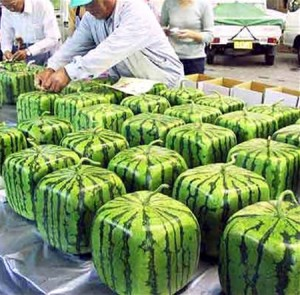 Bilmem anlatabiliyor muyum? Seviyorum..seviyor musuun? |
Bu adamlar, millet bellerine bomba koyup kendilerini patlatmayı akıl etmeden ya da ateşe vermeden çok önce harakiri ve seppukuyu hatmetmiş, uçakları doldurup gökdelenlerle çarpıştırmak, daha moda olmadan kamikazelerle milleti titretmiş ve tentacle porn’u, Godzilla’yı, Takashi Miike’yi çıkarmış adamlar. O yüzden bunalımları sosyolojik faktörleri bir kenara bırakalım. “Hiroşima’dan sonra böyle oldular, milletçe travma geçirdiler. İntihar oranı giderek yükseliyor. Efendim uyuşturucu kullanımı tavan yapmış. Avrupa’nın hayatında görmediği kokteyller ve kimyasallar burda liseli Japon gençlerinin elinde oyuncak vs vs…” Geçelim bunları. Her ne olduysa veya içtilerse ortaya çıkan karışım bazen nefis şeylere gebe oldu. Ben hep kendi çarpık kafamda merak ediyordum, animeler ne kadar gerçeği yansıtıyor? Harbiden çoğu animeseverin kafasında hayal ettiği gibi “PostApocalyptic bir Bladerunner Tokyo’su” var mı? Motosikletli, kılıçlı samuraylar ve öldüren demir yoyolu çılgın okul kızları Shibuya’da cirit atıyor mu? Az sonra!
Cosplay nasıl bir şey?
Tokyo’nun Harajuku istasyonu moda dünyasının Mekke’si olmadan çok önce gotik lolitalar ve kogallar daha sokakları doldurmamışken cosplay bu oluşumun ilk sinyallerini veren fenomendi. Cosplay kısaca kostüm oyunu olarak değerlendirilebilir. Frp’yle haşır neşir olanlar bilirler. Live oyunlarda kostümler, asalar, kılıçlar sık karşılaşılan şeylerdi. Karakteri öldüğünde ağlayan, oyuna yürekten bağlı gençler de tabii. Yaratacağınız cosplay karakteri için sınırsız seçenek vardır. Anime ve manga kahramanlarının yanı sıra her türlü fantastik mecrayı kötü emellerinize alet edebilirsiniz. Pikaçhu bile olabilirsiniz.
| 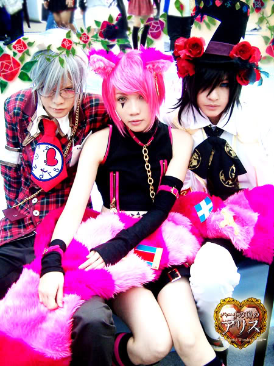 | 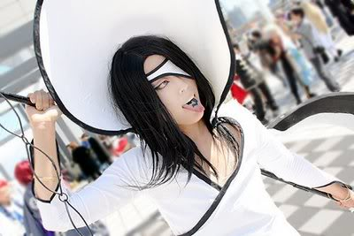 |
“Türkiye’de bu işler tutmaz.” derseniz yanılıyorsunuz çünkü tam olarak cosplay sayılmasa da bizim gençlik bu ortamlarda adını duyuracak işlere imza atmıştır. Aşağıdaki video tamamen türk FRP’cilerinin eseridir. Dragonlance yani Ejderha Mızrağı fantastik edebiyat serisinin saygı duyulan bir parçasıdır. Bizimkiler bir gün “Ulan filmi çekecek paramız yok bari trailer çekelim.” deyip ateş çemberine atlamışlar. Şimdi bu traileri seyredip gülebilirsiniz. Biz de her seyrettiğimizde gülüyoruz. Aksanlar, kostümler, oyunculuk; hiçbirine sinematik şaheser diyemeyiz bu bir gerçek. Fakat projenin arkasında gerçekten bu işe inanılmaz vaktini ve emeğini vermiş bir grup insan var. Azıcık maddi destekle yapılan bu projeden Yüzüklerin Efendisi kalitesinde bir şey bekleyen diğerlerine ise söyleyecek sözüm yok.
Çoğunluk Cosplay olayının çıkış yerini uzakdoğu zannediyor aslında bu tam anlamıyla doğru değil. Şimdilerde dev organizasyonlara dönüşen ComicCon gibi sci-fi fuarlarından çok önce tüm çizgiroman dünyası yıllık olarak Worldcon’da biraraya geliyordu. Worldcon 1939’yılından beri devam eden büyük bir bilim kurgu fuarı. (Evet doğru okudunuz 1939. Şimdiye kadar sadece 1942 ve 45 yılları arasında düzenlenmedi. Tahmin edersiniz… 2. Dünya savaşı desem…) 1984 yılında fuara davet edilen Japon manga çizerleri ve prodüktörler Amerika’da 5 gün boyunca çizgiroman fanlarının gayet ciddi bir şekilde kostümlerle sokaklarda fink atmasından çok etkilenince geri dönüp ortamları Japon gençliğine bildirdiler. Her ne kadar Cosplay’i Japonlar yaratmasa da onu alıp bambaşka yerlere taşıyanlar onlar oldu. Bendeniz de amatör bir otaku olarak çoğu zaman onların yaptığı işleri hasetle seyrediyorum. (Otaku: Kelime anlamı olarak fan gibi bir şey. Cosplay’i, animeleri hastalık derecesinde sevenlere takılan isim. Bir çeşit psikolojik manyaklık) Dünyanın geri kalan cosplayerları onların yanında sakil ve acemi duruyor. İnternette hala daha pek çok sitede “Amerikalılar cosplay yapmasın!” şeklinde foto bombardımanları var, buradan bir örneği göstereyim.
|
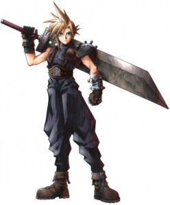 Final Fantasy serisinden Cloud |
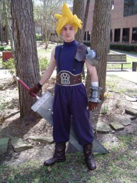 U S and A olmamış. Otur |
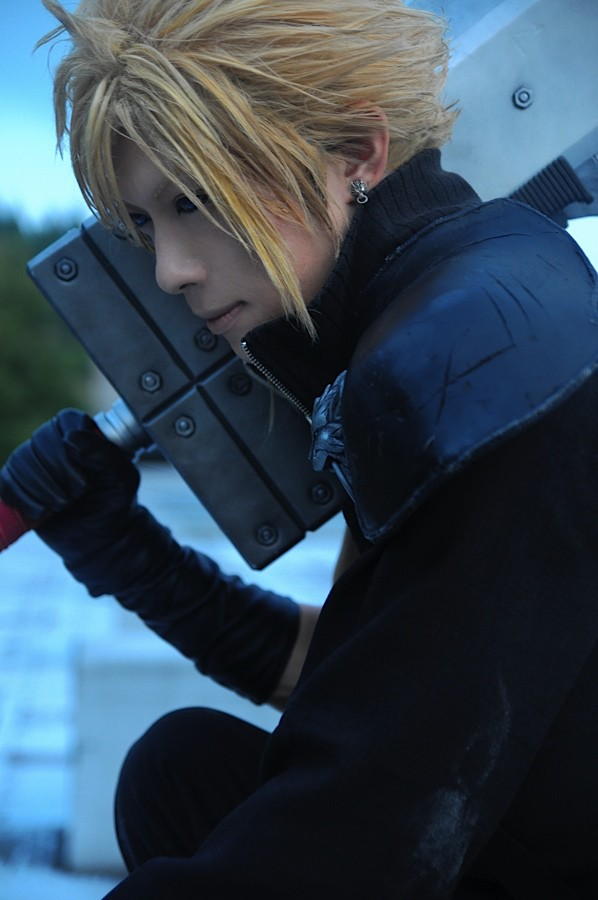 Japon arkadaş yapmış. Güzel olmuş... |
Benim konuştuğum saf kan Japon cosplayerların çoğuda Amerikan kardeşlerine dudak bükmekte.
Tabii american “geek”leri bu haberler yüzünden isyan edip, yırtındılar. “Burada da çok başarılı cosplayerlar var. Ama siz en kötüleri seçip koyuyorsunuz. Japonların ölesiye fotoşopladığı bu cosplayerlar gerçeği yansıtmıyor!” Yıllar içerisinde USA topraklarında cosplay gelişmiş olabilir (ki çok başarılı cosplayerlar var. Geçen seneki Bayonetta’lar neydi öyle?) Ama Japon hatunlar ve herifler her seferinde basıyor. Dergilerde gördüğümüz mankenler de fotoşoplu sonuçta. Japon cosplayerlara firmalar büyük maddi destek sağlıyormuş da…. O para onlarda olsaymış da falan filan. Buradaki niyetim cosplayercıların naif kalbini kırmak değil ama bizzat konuştuğum bazı Tokyo cosplay canavarlarının bu işe nasıl bir emek verdiklerini kendilerinden dinledim. (Saatlerce… ölesiye… başka bir şey konuşmuyor deliler.) Adamlar sadece kostümle falan haftalarca uğraşmıyor, canlandıracağı karakterin yüz mimiklerine kadar her şeyi yalayıp yutuyor. Poz verme anı geldiğinde herif yüzünü ve vücudunu öyle bir ayarlıyor ki bir anda Alucard, Yuki, Bleach artık Allah ne verdiyse oluveriyor. Sadece “Parayı bas. Kostümü giy.” felsefesi yok yani. (Ne felsefesi var peki? demeyin. 3 haftadır anlatıyorlar bir halt anlamıyorum ki. Cosplayercılar başka dilden konuşuyor, başka gezegenden geliyorlar sanırım.) Konuştuğum çocuklardan biri Light denen karakteri oynaya oynaya Light olmuştu tamamen. Death notu’na yazacaktı neredeyse beni. Tırstım kaçtım (ki övünmek gibi olmasın manyaktan kolay tırsmam). Londra cosplay fuarında yıllar önce ben de Japonlarla yarışacak durumda değildim. O yüzden diğerlerinin hasetlerini, hırslarını biraz anlıyorum. “Bizde niye böyle durmuyor kardeşim!” isyanını ben de yaşadım. Amerikan gençliği bunu eğlenmek için yapıyor, diğer grup Naruto evreninde yaşıyor, fark bu kısaca. Her şeyi en ekstrem uca götürmeden rahat edemiyorlar bunlar. Kavgalar ne kadar uzarsa uzasın görüp görebileceğimiz en büyük şiddet plastik Jedi kılıçlarıyla birbirlerini kovalayan çocuklar olacaktır. Cosplayci şiddet uygulamaz. Bazen canlandırdığı karakterler kana susamış canavarlar olabilir o ayrı.
Cosplay sınırsız özgürlüğü beraberinde getiriyor. İstediğiniz karaktere bürünebiliyorsunuz cinsiyet gibi şeyler cosplay dünyasında çok önemsiz ayrıntılar. Örneğin: Bu arkadaş hakkında size kısaca bilgi vereyim. Evangelion serisinin cosplayini yapıyor, 18 yaşın üzerinde ve erkek. Kızların erkek karakterlere bürünmesi, erkeklerin Sailor Moon olması gayet normal sayılıyor. Kadın kılığına girenler gay değiller, gayet heteroseksüel hatta oraya kız bulmaya gelmiş, hormonları burunlarından akan abaza arkadaşlar. “Fırfırlı tütü ve bağcıklı gotik korse giyerek nasıl karı tavlanır ula!” diyenlere tek sözüm cosplay kızlarını tanımıyorsunuz olacaktır. Cosplayin bir alt kolu olan Crossplay’in bildiğimiz anlamda herhangi bir cinsel amacı yok. Kızların erkek karakterlere bürünmesi çok daha sık karşılaşılaşılan bir durum, hatta bayıldığımız çoğu erkek karakteri canlandıran cosplayercılar bayan. Bunların arasında benim bayıldığım biri varsa o da Yuegene. Resimlerini ilk gördüğümde ve erkek olduğunu duyduğumda ağzımın suyu akmıştı. Sonra bir baktım meğer hatunmuş. İki hafta sonra nette baktım birileri “Yok o erkek.” diyor. Beni yine aldı bir şüphe. Nihayetinde gerçeği öğrendik. Kendisi süper kafa bir hatun ve benim gibi bir cosplay cahiline bile sabırla neyin ne olduğunu anlatmaktan yorulmuyor. Bazı beğendiğim cosplayercıları buraya eklemek istiyorum (Aslında 50 tane eklemek isterdim ama büdütörler beni öldürecek cesedim Japonya’da kıyıya vuracak.)
 Pandora's Heart -Will of the Abyss |
 Beleth of Lineage |
Cosplay etkinliğinde insanlarla tanışmak çok kolay. Sevdiğiniz karakterlere “glomp” yapıyorsunuz. Buna kısaca “gerilip gerilip insanın üstüne atlama eylemi” diyebiliriz. Kızları çimlerde sürüklüyorlar, oğlanları aynı anda 9 kız kovalıyor falan. Youtube’da arayın, seyredin, çok komikler. Adamlar geek ve sosyalfobik olduklarından böyle bir iletişim yolu keşfetmişler. Gençlerin böyle toplanması İspanya’da ve İtalya’da ve diğer uzakdoğu ülkelerinde de çok popüler. Deviant semalarından duyduğuma göre Londra’da Cosplay piknikleri bile yapılıyormuş.
Japonya’daki felaket cosplay dünyasınıda sarstı doğal olarak. Kimsenin kostümle ilgilenecek hali kalmadı. Yine de oraların en ünlü anime ve manga çizerleri en sevilen anime karakterlerini çizdikleri özel manga sayıları hazırladılar. Bu seriler sayesinde oldukça sıkı bir para toplamışlar. Bu yazı bittiğinde deprem henüz yeni olmuştu. Böyle bir felaketin ardından “Aaa pikaçu, kawai!” şeklinde neşeli bir yazı ayıp kaçacak diye çok endişeliydim ama onlar bana gönderdikleri maillerde en berbat zamanda bile süper bir espri anlayışına sahip olduklarını gösterdiler. Öyleyse onlardan size direkt mesaj: Pray For Japan (Even if you are an atheist. Pray to a Miyazaki bathouse spirit. That would be hip.)
Harajuku’dan sokak manzaraları: Fruits,Kawai ve Decora Kızları
Harajuku’nun tüm dünyaya yayılmasında FRUITS dergisinin büyük katkısı vardır. Fruits gençliği olarak bilinen bu sokak modası savaşçıları aslında “decora” olarak bilinen bir moda akımının öncüleriydiler. Magazinin şöhreti decorayı aşınca millet bu şaheser güzelliğindeki delilere kısaca fruit gençliği demeye başladı.
| 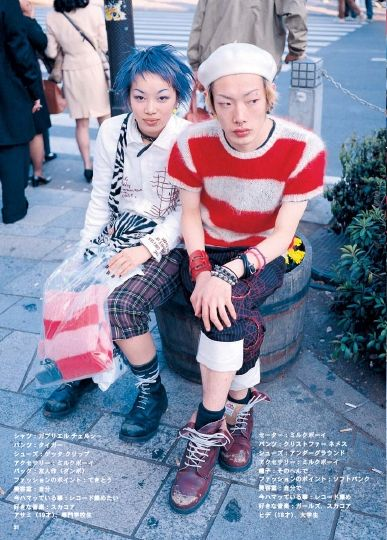 | 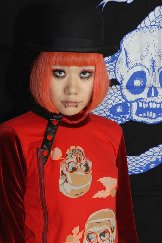 |
Decoracıların işgal ettiği herhangi bir mekanda sıkılmanız imkansız. Pokemonlar, oyuncak ayılar, abartılı akseuarlar, para para dansı, rengarenk saçlar. Kızların üstüne sanki anime film ya da Hello Kitty mağazası patlamış gibi. Çantasına çatal saplayan da var kafasına akvaryum takan da… Bu stili kawai tarzıyla karıştırmak çok kolay. Kawai olarak bilinen kızların özelliği çocuk gibi giyinmeleri. (Çocuğun içine Aysel Gürel’in ruhunun kaçtığını farzedin.) Çizgi film karakterlerinin olduğu tişörtler ve elbiselerin yanısıra az makyaj ve çocuk saç modellerini tercih eden hatunlar decoranın az parıltılı versiyonları sayılırlar. Yani Kawai kızları İggy Pop’sa decoracılar Dawid Bowie’dir. Decora’da çocuk kıyafetlerinin yanısıra yüzlere yapıştırılan stickerlar veya parlak taşlar dikkat çeker. Çok katmanlı pofuduk kıyafetler, abartılı sayıda kolye ve küpeleriyle decora kızları moda dünyasına bomba gibi düştüler. İlk bakışta benzer gözükseler de hepsi nev-i şahsına münhasır punk, rock, geleneksel geyşa tarzı, ne ararsan. Decora gençliği Harajuku’nun en canayakın grubu. Ellerinde “Free Hugs” yazılı pankartlarla bekleşip isteyenlere bedavadan sarılıyorlar. Bir gün yolunuz oralara düşüpte “Şu gençlerle muhabbet kurayım. Aralarına katılayım.” arzusuna düşerseniz ortama en güçlü giriş biletiniz decora kızlarından geçmekte. Guro lolitalara falan yanaşmak cesaret istiyor çünkü.
Lolitalar
En sevdiğim gruplardan biri olan Lolitalar yaklaşık 20’den fazla alt kolu olan popüler bir akım. Bu grupların her birinin sıkı kuralları var. Her şey mükemmel olmadan sokağa çıkarsanız bu son hatanız olabilir. O yüzden loliler kurallara sıkı sıkıya bağlı ve kapalı küçük gruplardan oluşuyor. Lolitaların tanrıçası hayranlarının sevgiyle taktığı isimle kısaca(!) Mana-Sama olarak biliniyor. Mana müzik endüstrisinin yarattığı en garip şaheser. Visual kei akımını başlatan gruplardan Malice Mizer’ın kurucusu olmakla kalmayıp tüm lolilerin taptığı “Moi-même-Moitié” tasarım evinin başında. Kısaca Mana ne derse Lolita ordusu onu giyip, onu soluyor. Kendisi her daim lolita kıyafetleriyle ortalıkta dolanır. Elegant Gothik Aristocrat akımını tek başına bu hanımefendi başlatmıştır. Diğer grup üyeleri de aynı şekilde takılırlar. Fakat Malice Mizer grubunun tüm üyeleri erkek. Ama kılıklar… işte… ne diyeyim bu şekilde.
Black(Kuro) lolita: Tüm kıyafetlerinde sadece siyah rengi kullanıyorlar. Soğuk ve suratsız takılmayı seviyorlar. Başları yerde garip bir yürüyüş şekilleri var. İnternette chatleşirken bile tek kelimeyle cevap verip bazen adamı zıvanadan çıkarıyorlar.
Princess(Himeru) lolitalar: Ağırlıklı olarak pembe ve pastel rengi kostümlerle salınırlar. Fazla neşeli ve aşırı romantikler. İki günde mail hesabınızı lolcat ve bento yemek kutusu resimleriyle tıkabasa doldurabilirler. Black lolitaları sevmiyorlar. White Lolitalara “Siyah olanların sıkıcı fotonegatifleri.” diyorlar. Toplu halde çığlık attıklarında desibel dinlemiyorlar. Bu grup şemsiyesiz sokağa çıkmaktan hiç hazzetmiyor.
Gore lolitalar: Oyuncak kutularından kabuslarımıza dalan kafası gözü paralanmış kırık bebeklerden ilham alıyor ve ring’teki kızı aratmayacak kıyafetlerle öğlen vakti Tokyo halkını dumurlara uğratmayı seviyorlar. Bu lolitaların çoğu manyaklık derecesinde Visual kei müzik gruplarına hastalar. Visual kei gruplarının neredeyse tüm erkek elemanları gore lolitalara benzediği için iyi anlaşıyorlar. Çok daha büyük bir grup olan Gotik Lolitalar bu grubu kanatlarının altına aldıktan sonra Gore kızları çoğalmaya başladı.
White (Shiro) Ethereal Lolita: Beyaz lolitalar siyah kız kardeşlerinin antitezi olarak sadece beyaz ve tonlarını tercih ediyorlar. Çoğu zaman siyah ve beyaz loliler 2’li gruplar halinde bir arada gezerek kontrast yaratmayı seviyor. Bunlar lolitaların en ağırbaşlı ve olgun olanları ama hayalet gibi sessizce sokaklarda süzülmeyi seviyorlar ve webcam’den chat yapmaya çalıştığınızda fısıltılarını duymaya çalışırken kulaklarınız akıveriyor.
|
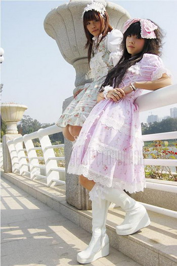 Himeru lolita |
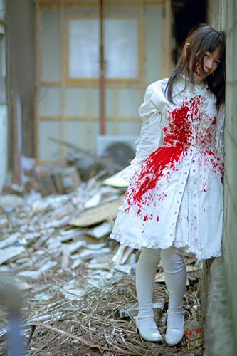 Gore Lolita |
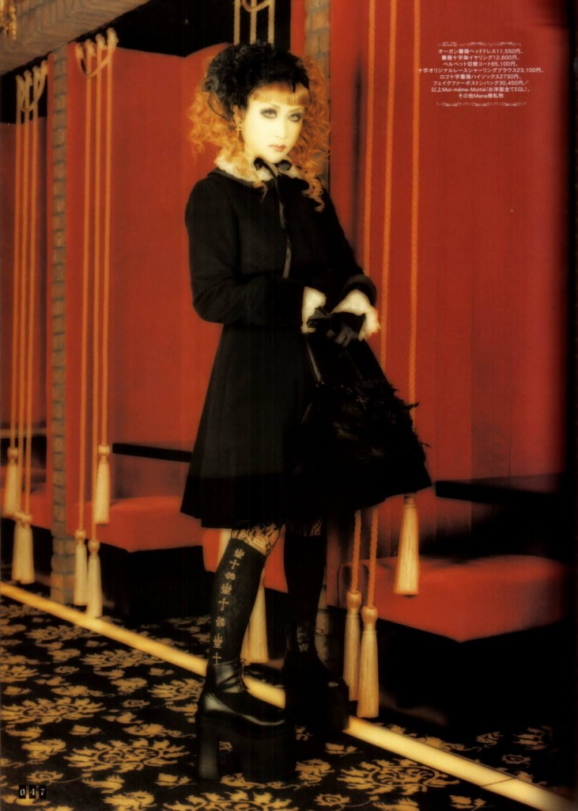 Mana- sama Black Lolita takılırken |
Ōji Lolitalar ise bu şık bayanların erkek karşılığı. Kralice Viktorya döneminden kalan pantalonları, dönemin baston ve şapkalarını taşıyan bu beyler kendilerine “dandies” diyorlar. (zaten lolita deseler şaşardım.) Lolitalar bu işi oldukça ciddiye alıyor. Kostümsüz evden dışarı adım atmıyorlar. Asla bir sabahta kalkıp “Bir kot bi tişört giyeyim.” gibi bir şey yok. Yedi gün yirmidört saat bir lolita her zaman lolita. Evin içinde bile dönemin ev kıyafetlerini giyiyorlar. Yani öğlen saatinde mc donalds’ta zaman makinesinden kopup gelmiş bu prensesleri hamburger yerken görebilirsiniz. Tim Burton kız yurdu öğrencileri misali sokaklarda salınırlar. Bu kılıkların hepsi bir moda anlayışının parçası. Hiç bir cinsellik içermiyor. Gidip lolitaları ellemek falan yok yani. Ancak öyle uzaktan bakılıyorlar. Zaten öyle göğüs dekoltesi falan da yok. Viktorya çağının ahlak anlayışını günümüzde yaşayan, biraz hayalperest, hafif uçuk, Rokoko dönemine ait her şeyi ezberlemiş bir garip kitle işte. Sevdim lolitaları, aralarında zehir gibi zeki olanları var.
|
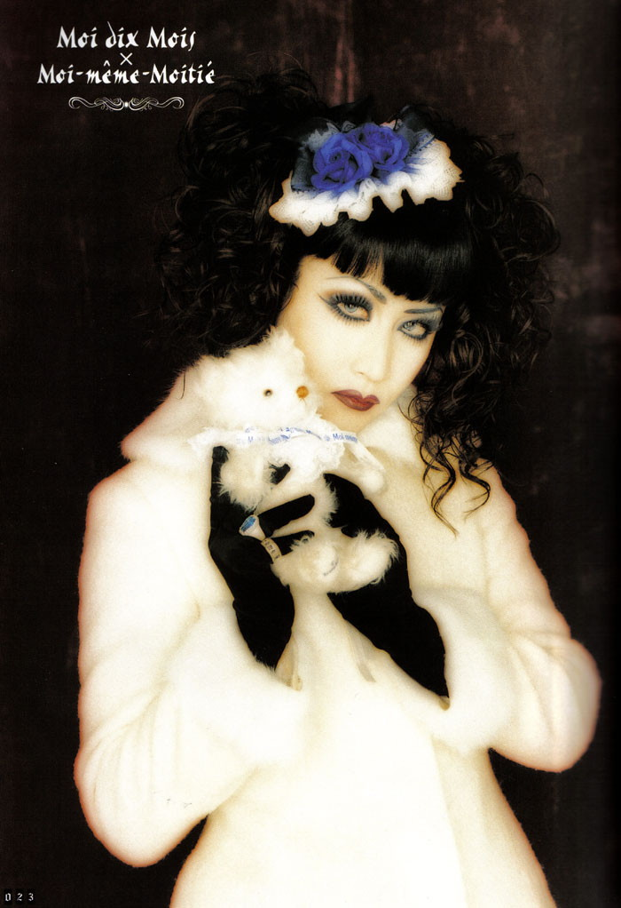 Mana- sama |
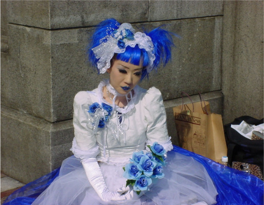 Blue Lolita |
Tokyo sokaklarında maceralarımız motosiklet çeteleri ile devam ediyor…


{kind=link}
{kind=link}
{kind=link}
{kind=link}
{kind=link}
{kind=link}
{kind=link}
{kind=link}
{kind=link}
{kind=link}
{kind=link}
{kind=link}
{kind=link}
{kind=link}
{kind=link}
{kind=link}
{kind=link}
{kind=link}
{kind=link}
{kind=link}
{kind=link}
{kind=link}
Güzel bir pazar okuması oldu benim için. Elinize sağlık…
Ellerine sağlık çok güzel ve bilgilendirici bir yazı olmuş. sorularımı sonraya saklıyorum
Seni Death Note uma yazdım Burcu kişisi!! Yazı dizisi bitsin hele soracaklarım var. KIMOCHIIIIIII……….
Çok eğlenceli bir yazı olmuş. Dolayısıyla ne bahçeye çıktım ne de kimseyi dürttüm. Sadece arada çalan telefonu açmak zorunda kaldım, o kadar…
Aha süper, burcucum yoğun ve eğlenceli olmuş eline aklına sağlık
ctesi günü jokeri 🙂
Bu siteyi ( ya da benim için yeni nesil bir kültür dergisini) gizli gizli takip ediyordum ama bu yazıdan sonra yazıda geçen her şeyi araştırdım ve müthiş keyif aldım. Böyle bir yazı yazdığınız için teşekkürler. Keşke yorum bırakmaktan başka bir şeyler daha gelse elimden teşekkür etmek adına.
yazı enfes olmuş, oldukça tatmin edici klavyenize üslubunuza sağlık. bu pazarımın neşesi siz oldunuz.
teşekkür ederim 🙂
MUHAFEZAKAR BİR KİŞİLİĞİM OLMASINA RAĞMEN YAZINIZI ÇOK SEVDİM. BU SAYFAYADA NEREDEN ULAŞTIM ONUDA BİLMİYORUM. HERALDE YAZINIZIN KÜLTÜRLER ARASI FARKLILIKLAR BENİ SÜREKLEDİ. YAZINISIN TAMAMINI OKUDUM . ÇOK SEVDİM YAZDIGINIZ İÇİN TESEKURLER.
Windows Vista gibi vs hdjdjsnjxnjjdjdms